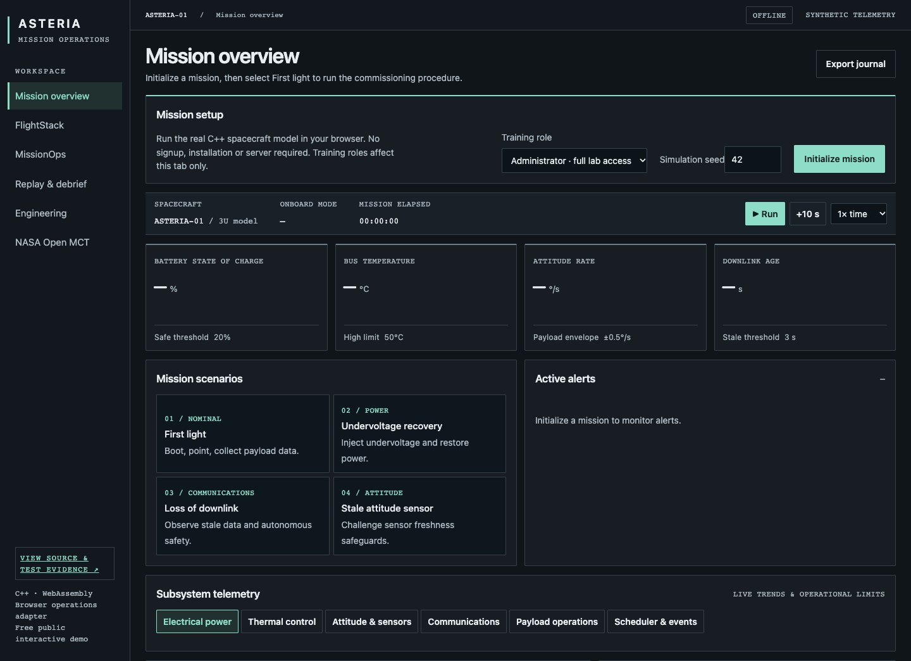
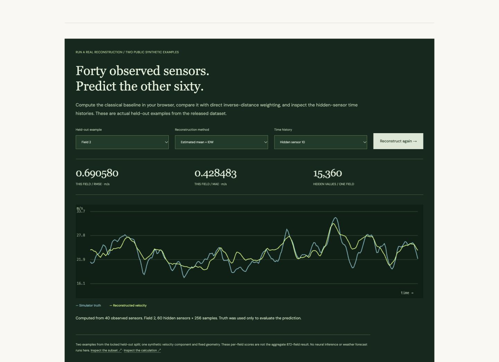

NASA Langley
Predictive maintenance
How well can a bearing classifier recognize a fault when the load or defect size changes?
Read the evaluationHello, I’m
I want to help us get farther into space.
I’m a software engineer and Rice graduate student, currently interning at NASA Langley. I want to build software, AI and data systems that help space and aerospace teams design, test and operate ambitious missions.
Being selected by NASA Langley Deputy Director Allen Kilgore for the Risk-Informed Decision – Deferred Maintenance Tiger Team is one of the moments I’m proudest of.
B.S. Computer Science, Virginia Tech · M.D.S. at Rice · U.S. citizen
NASA Langley
How well can a bearing classifier recognize a fault when the load or defect size changes?
Read the evaluation
Spacecraft software
Command a simulated spacecraft, trigger a fault and trace its response through the flight journal.
Read the case study
Wind-field research
Inspect reconstructed wind fields and compare the model with classical baselines.
Explore the researchInteractive projects
Run a spacecraft recovery, replay a turbofan’s readings, or explore the Artemis II mission data.
Rice Sports Analytics Team · Fall 2025
I put together opponent reports on chance creation, defensive shape and set pieces. Rice finished 10–4–6 and reached the American Conference championship final.
Contact
I’m open to early-career opportunities across space and aerospace, from software and AI to data, testing and operations. If your team is building something I could help with, I’d love to hear from you.